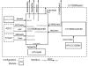

|
MICA2 Radio Stack for TinyOS
Last updated 03 Sep 2003 |
| Overview |
The MICA2 series of sensor motes use the ChipCon model CC1000 single-chip RF transceiver. Features of this radio include:
* Note: While the operating freq. is software selectable, external hardware attached to the CC1000 is set to operate in one frequency band. That is, a board set to operate in 433 MHz band will not operate at the 868/915 MHz bands. How do I tell what my operating range is?
This document describes the principles and operations of the software components used to drive the CC1000 for TinyOS.
| Description |
Figure 1 illustrates the overall component and configuration architecture for the CC1000 Stack.

Figure 1: The CC1000 Radio Stack Architecture
There are two core components to the stack:
CC1000RadioIntM: The data path module for the CC1000.This
module provides transmit and receive data movement using CSMA/CA based
contention avoidance schemes. In the receive mode, the module accepts bytes
of data from the radio via the SPI interface and performs the necessary
preamble detection, synchronization and CRC calculation/checks. When a
packet has been received, it posts a task which signals a receive event.
NOTE: While the stack computes and checks the CRC, it does not drop the packet
based on a bad CRC. Rather it sets the crc field of the TOS_Msg struct to be '1' if the
CRC is valid.
To transmit, the
stack checks to see if the channel is clear by searching for a preamble AND
monitoring received signal strength (via the ADC). When the channel is clear, it
toggles the radio and pushes out the preamble, sync and payload bytes. The stack also implements low
power listening modes and uses the Timer components to trigger RX and TX
periods.
CC1000ControlM: The control path module for CC1000 operation. This module provides all of the management functions of the radio including tuning, toggling between TX/RX operation, selecting power states, and reading special I/O pins. It provides these features via the CC1000Control interface. While most of the functionality of this stack is used by the data path, it is also exported outside the radio stack for applications that may need to take direct control of the stack. CC1000Const.h is a supplemental header file for the control module that contains special register definitions and the frequency parameters table. This file is further explained in the Usage section.
Both these modules and the necessary supporting modules are tied together in a single configuration component: CC1000ControlC. The configuration exports the RecieveMsg, BareSendMsg and StdControl interfaces. It also exports the CC1000Control interface for applications that wish additional control/monitoring of the radio.
The MICA2 CC1000 radio implementation differs from the MICA TR1000 stack in the following ways:
| Usage |
As is, the modules default to the following operational state after being issued StdControl.init() and StdControl.start():
The CC1000 uses a digital frequency synthesizer to select a particular send/receive channel. Specific control registers are programmed with values according to the channel and FSK separation used. Because of the nature of the synthesizer, it is only capable of reproducing discrete frequencies in the operating range of the device. The manufacturer provides tools to determine these optimal frequencies and their associated control values, but they are unintuitive and cumbersome to use.
The TinyOS stack and related tools take the guesswork out of tuning the CC1000 for the MICA2 series motes. The stack will automatically compute the nearest channel for a given frequency and program the necessary register values (manual tuning), or use pre-determined values from a preset table (preset tuning). In addition, the channelgen tool provides a means to verify the actual channel used by the radio and simplify the generation of new presets.
Important Points on tuning the CC1000:
Manual Tuning (PREFERRED METHOD)
Runtime: CC1000Control.TuneManual(uint32_t DesiredFreq) (DesiredFreq is in Hz) Compile time: -DCC1K_DEF_FREQ=<DesiredFreq> This method is the preferred method of tuning the mica2 radio. The control path function CC1000Control.TuneManual() takes a desired frequency in Hz, computes the optimal achievable frequency, determines the necessary control register values, programs the CC1000 and calibrates the device. It returns the frequency, in Hz, of the actual channel. Defining the compiler flag CC1K_DEF_FREQ=x sets the default frequency for the device when compiling the application. For example, the command:
bash% CFLAGS=-DCC1K_DEF_FREQ=916400000 make mica2
will build your application using a default frequency around 916.400 MHz. You can alternatively put the compiler flag as a part of your custom build environment.
Using manual tuning does not affect the modem control registers (default data rate is 38.4 Kbaud/19.2 Kbps).
Preset Tuning
Runtime: CC1000Control.TunePreset(uint8_t Index) (Index is the preset index value) Compile time: -DCC1K_DEF_PRESET=<Index> The CC1K_Params[] table in CC1000Const.h defines specific operating parameters for a given frequency/datarate combination. The table resides in flash memory to minimize RAM footprint. The control path function CC1000Control.TunePreset() takes a given index in this table, sets the register values and calibrates the device. Defining the compiler flag CC1K_DEF_PRESET=N sets the default preset index to use when compiling the application. For example:
bash% CFLAGS=-DCC1K_DEF_PRESET=2 make mica2
will build an application using preset #2 from the preset table. You can alternatively put the compiler flags as a part of your custom build environment.
The TinyOS-1.1 distribution comes with some pre-packaged presets defined in CC1000Const.h. Use the channelgen tool to generate additional presets if desired.
NOTE: When using preset tuning, ALL of the preset parameters are programmed in the device, including the modem control registers.Using channelgen
To build the tool, change to the tools/src/CC1000 directory and type 'make' at the command prompt.
SYNOPSIS
channelgen [options] FREQUENCY
DESCRIPTION
The channelgen tool generates CC1000 channel information for the given desired FREQUENCY. The application emulates the TuneManual() component function of the radio stack and implements the same calculation engine. It can be used to determine what actual frequency the radio will use given a desired frequency and/or to generate a preset table entry. By default, channelgen provides only actual channel information.
OPTIONS
-p Print C-style preset table entry.
The CC1000Control interface provides additional functions to control various functions of the radio at runtime. Users should refer to documentation comments in the file CC1000Control.nc.
The component CC1000RadioC exports the BareSendMsg and ReceiveMsg interfaces. Their function the same as that for the original MICA stack and can be directly connected to components using these interfaces.
The data path provides a method of altering the duty cycle state of the radio to meet power constraints of the application and/or power source. CC1000RadioIntM exports individual commands to set and determine the present duty cycle mode for both the receiving and transmitting side of the data path. The functions are summarized in Table 1. The associated listening states are summarized in Table 2.
Note that BOTH the receiver and transmitter must be in the same mode to communicate.
|
Command Declaration |
Description |
| result_t SetListeningMode(uint8_t power) | Sets the receiver duty cycle mode.
|
| uint8_t GetListeningMode() | Get the current receiver duty cycle setting.
|
| result_t SetTransmitMode(uint8_t power) | Set the transmitter duty cycle mode.
|
| uint8_t GetTransmitMode() | Get the current transmitter duty cycle mode.
|
Table 1: Radio data path duty cycle control commands.
| Mode | Duty Cycle %) | Max Packet Rate (pkts/sec) | Effective Data Rate (kbps) |
| 0 | 100 | 42.93 | 12.364 |
| 1 | 35.5 | 19.69 | 5.671 |
| 2 | 11.5 | 8.64 | 2.488 |
| 3 | 7.53 | 6.03 | 1.737 |
| 4 | 5.61 | 4.64 | 1.336 |
| 5 | 2.22 | 1.94 | 0.559 |
| 6 | 1.00 | 0.89 | 0.258 |
Table 2: Duty cycle modes and their corresponding packet and data rates.
| Updates |
This page will be updated as new features/fixes are made to the radio stack.
Last updated: 11/17/2003
{kind=link}